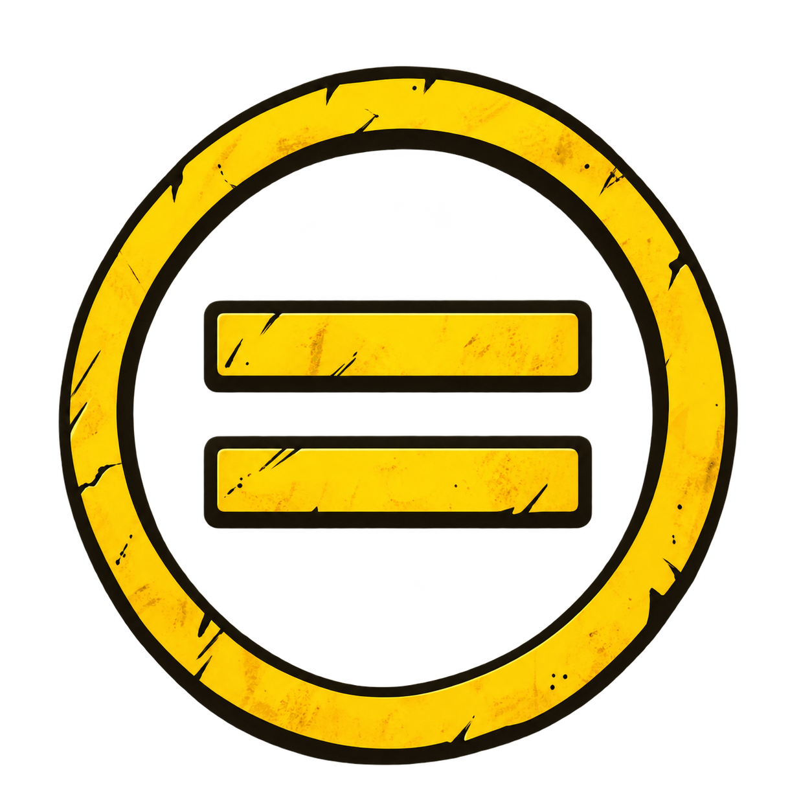
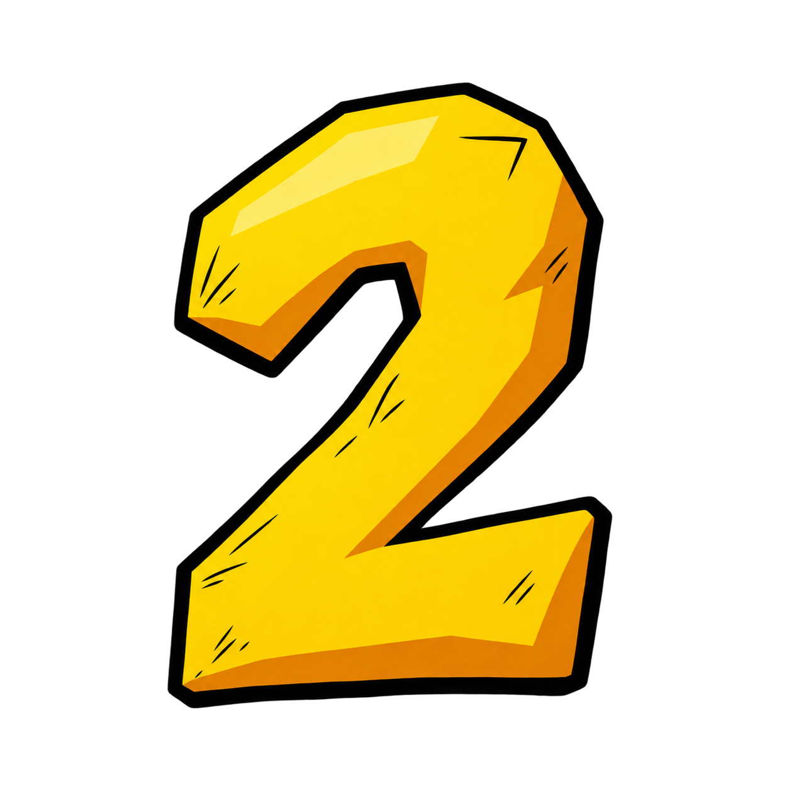

Maquette des cartes objectifs et de leurs sculptures hexagonales.


Génère une série, annote les pistes, coche celles à garder, puis exporte leurs définitions et le catalogue du jeu.
Les idées restent dans cette page jusqu’à l’export. L’annotation est conservée dans le champ « text » du code objectif.